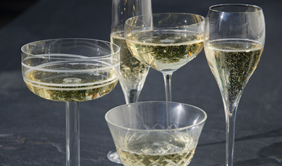

För att kyla bubbel föreslås:
10-20 minuter i frys, alternativt 2-4 timmar i kylskåp
Vintertid går det att kyla flaskan utomhus, men håll koll på
temperaturen så att flaskan inte fryser, då förstörs innehållet.
Winston Churchill älskade Champagne. 1908 köpte han sin
första flaska Pol Roger. Ett märke som skulle följa honom genom
hela livet. När Churchill dog 1965 hedrades han av Pol Roger med
en sorgkant på alla flaskor som såldes i Storbritannien. 1984 lanserade
Pol Roger sin prestigechampagne "Cuvée Sir Winston Churchill"
Glaset som bubbel serveras i spelar stor roll för hur bubblorna
beter
sig och känns i munnen. Kyler man glaset före servering
försvagas bubblorna och fettpartiklar (smuts) förstör bubblorna
totalt.
Smala, tunna glas bevarar bubblorna bäst och tulpanformade
glas
hjälper till att fånga aromerna vid toppen av glaset.
En flaska Champagne innehåller ungefär 48 miljoner separata bubblor.